전체 위에서 본 배치도
위에서 본 배치도 거실 · 꺾인 벽 책상
거실 · 꺾인 벽 책상 화이트 장책상 180cm · 책상 밑 접은 건조대
화이트 장책상 180cm · 책상 밑 접은 건조대 식탁 200×60 (왼쪽 벽에 붙여 길게) · 의자 2
식탁 200×60 (왼쪽 벽에 붙여 길게) · 의자 2 주방 · 새 냉장고 자리 · 정수기 · 식기건조대 · 큐커 칸 (현장 사진 반영)
주방 · 새 냉장고 자리 · 정수기 · 식기건조대 · 큐커 칸 (현장 사진 반영)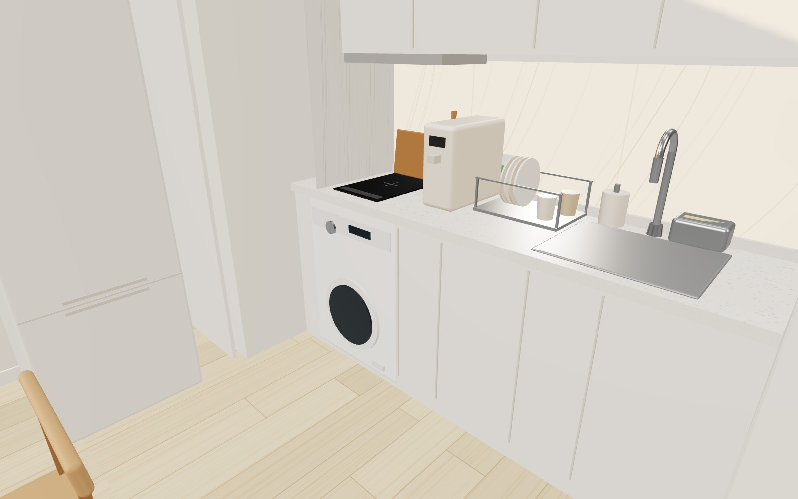
침실 · 저상 매트리스 침대 (현장 사진 반영) 침실 · 화장대 90×35 + 원형 벽거울 + 라탄 스툴 (침대 발치 앞 벽)
침실 · 화장대 90×35 + 원형 벽거울 + 라탄 스툴 (침대 발치 앞 벽)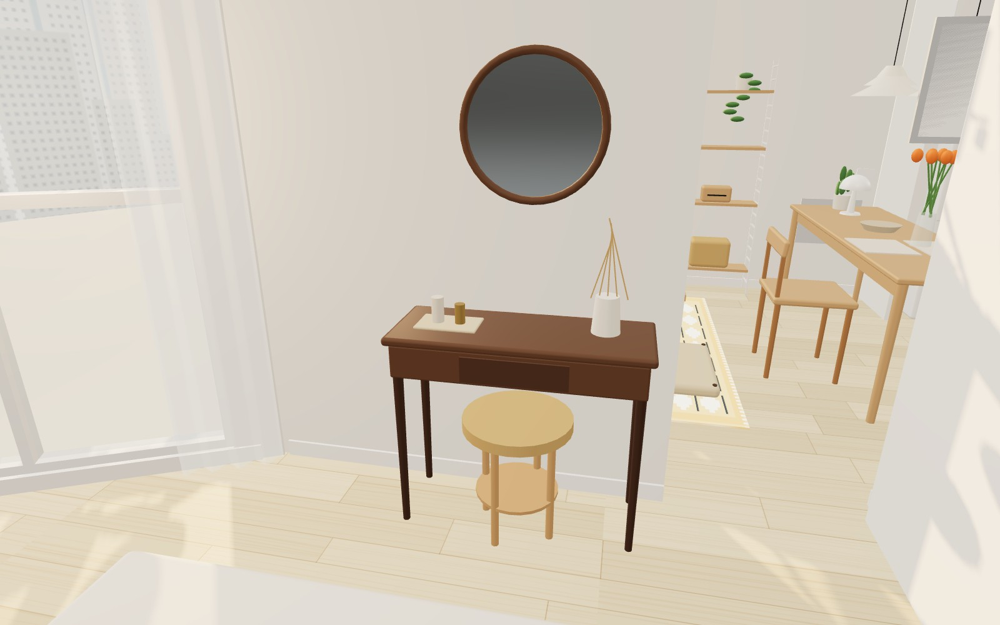
욕실 · 반다리 세면기 · 검정 인조석 선반 · 거울장 · 비데 (현장 사진 반영)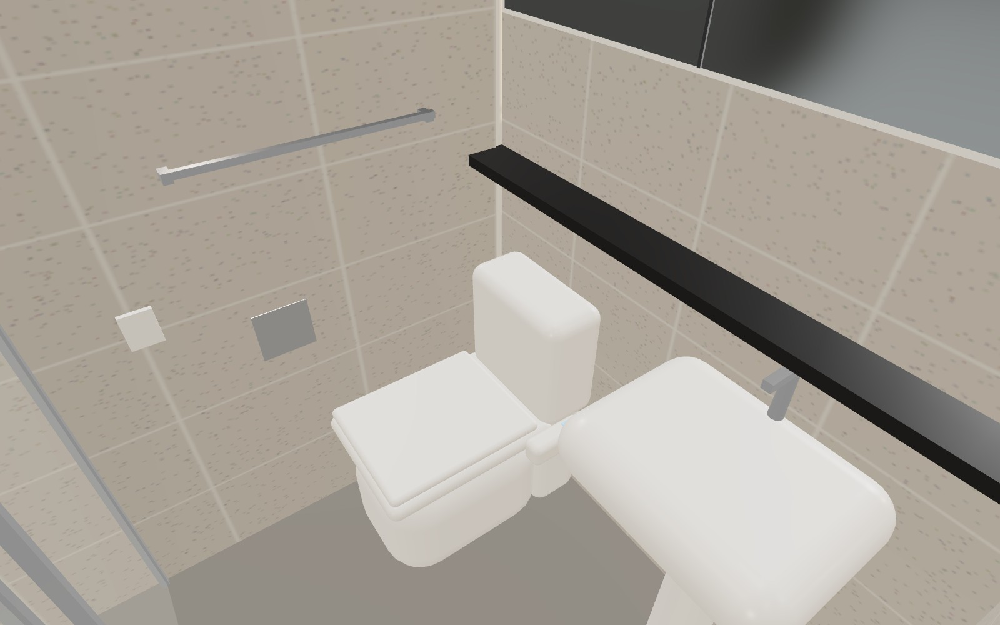
빨래 모드 · 침실 창가 건조대 + 구석 제습기 + 서큘레이터 (문 닫고 말리기)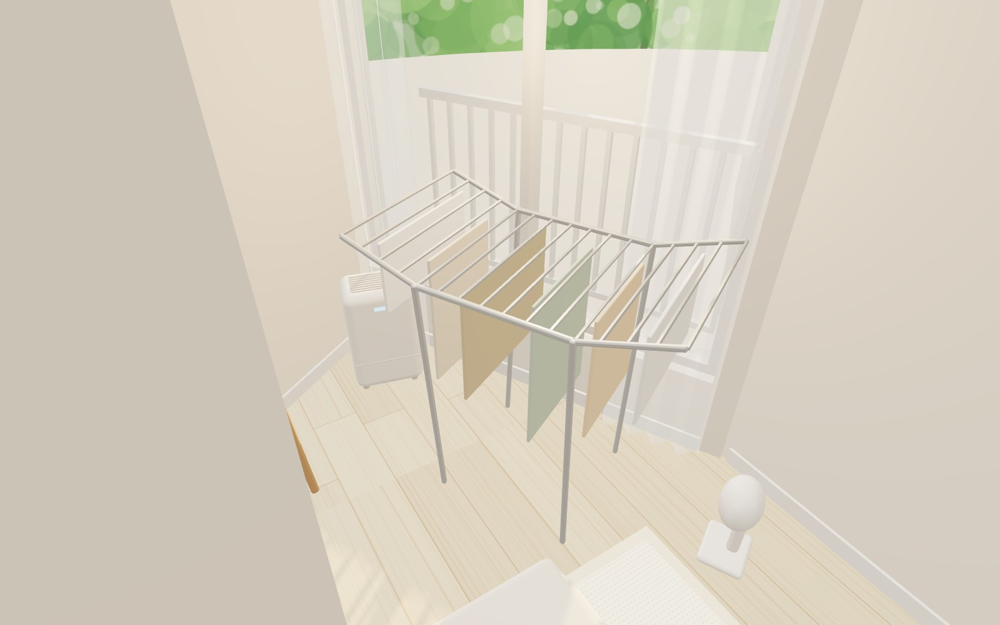
A안 · 서쪽 벽: 월넛 서랍장 위 우드 턴테이블·스피커 + 스트링 벽선반 (책·소품만)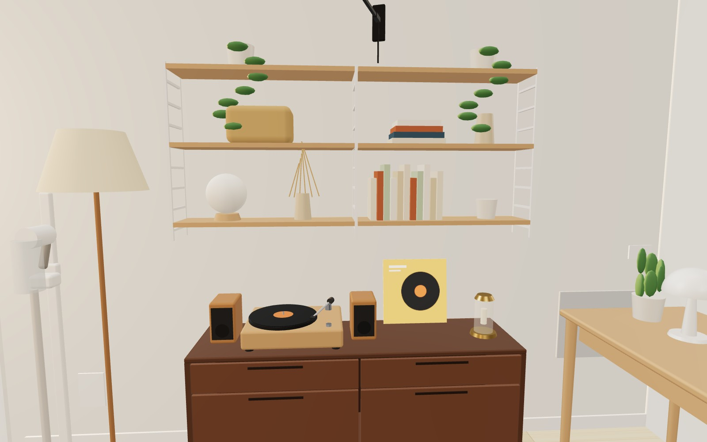
B안 · 스트링은 책상 위 작은 1칸, 인터폰 벽은 비움 (3D에서 B안 버튼)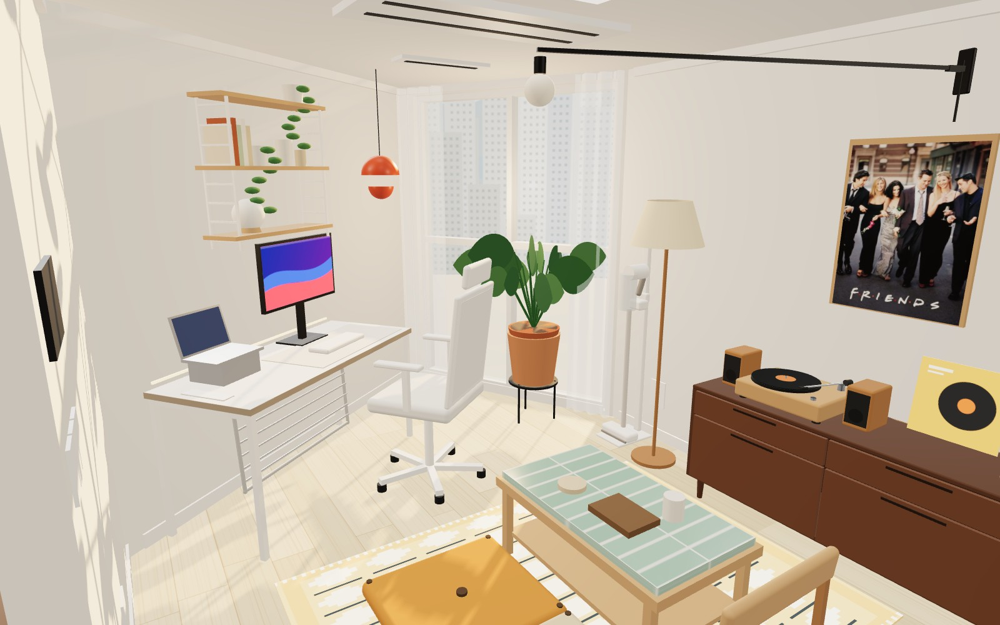
B안 · 서쪽 벽: 서랍장 + 프렌즈 포스터만 (개방감)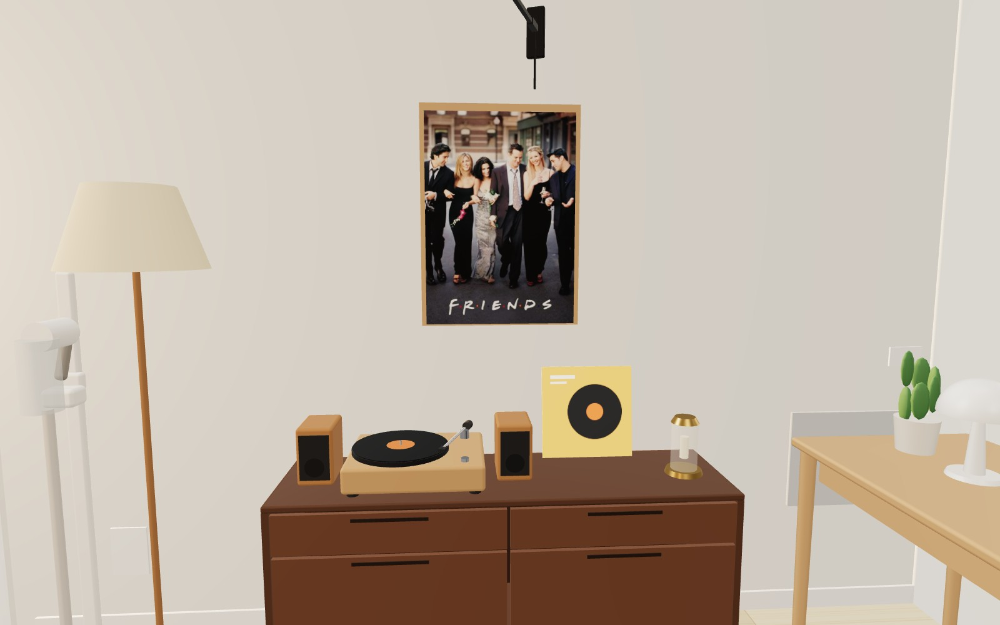
C안 · 작은 스트링을 인터폰 벽(월패드 옆)에, 책상 벽은 비움 (3D에서 C안 버튼)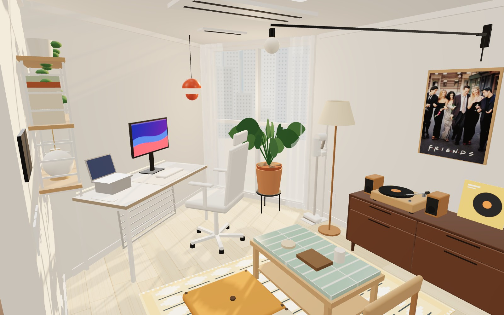
C안 · 인터폰 벽 스트링 1칸 3단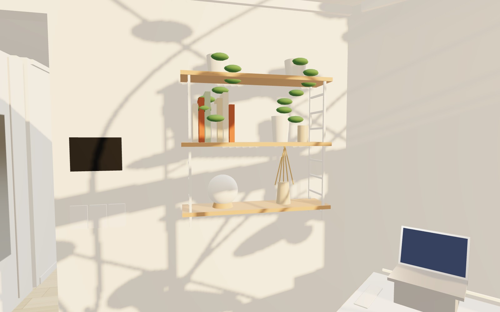
현관 들어서면 정면 복도 벽 · 뉴욕 거리 사진 액자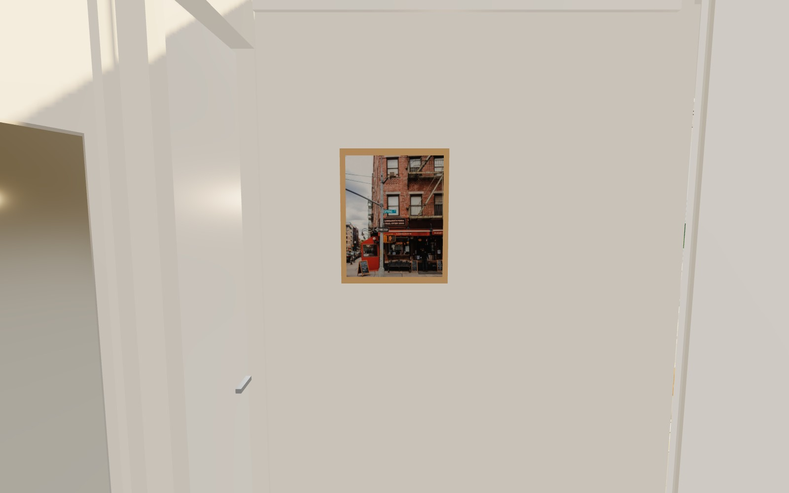
거실 · 밤 조명 (롱암 벽등 · 인터폰 벽 아래 LP 사이드보드 · 서쪽 벽 책장) 좌탁·방석 뺀 거실 (러그는 그대로)
좌탁·방석 뺀 거실 (러그는 그대로)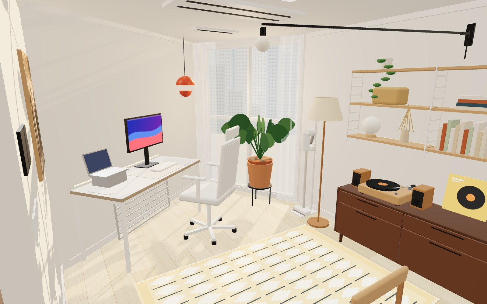
좌탁·방석 뺀 전체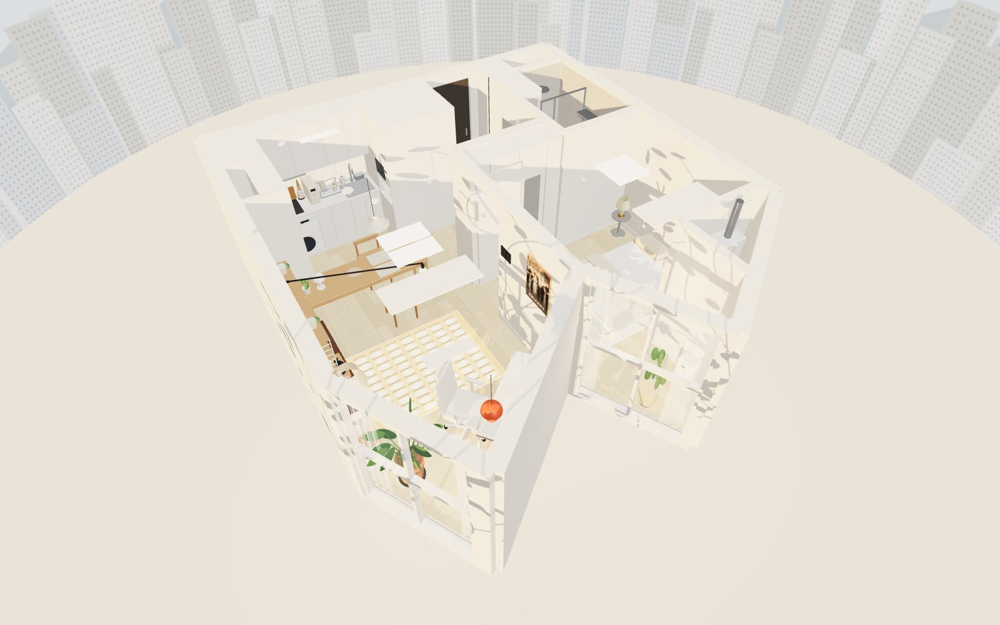